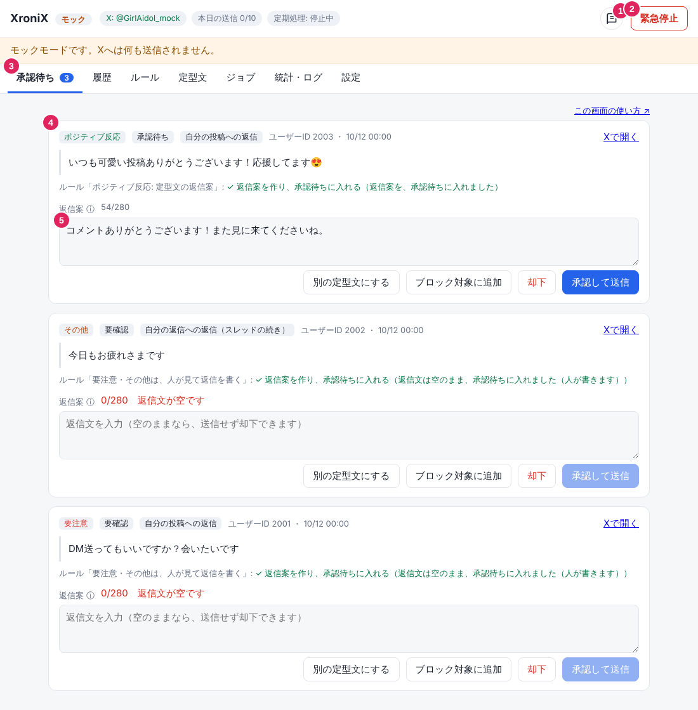
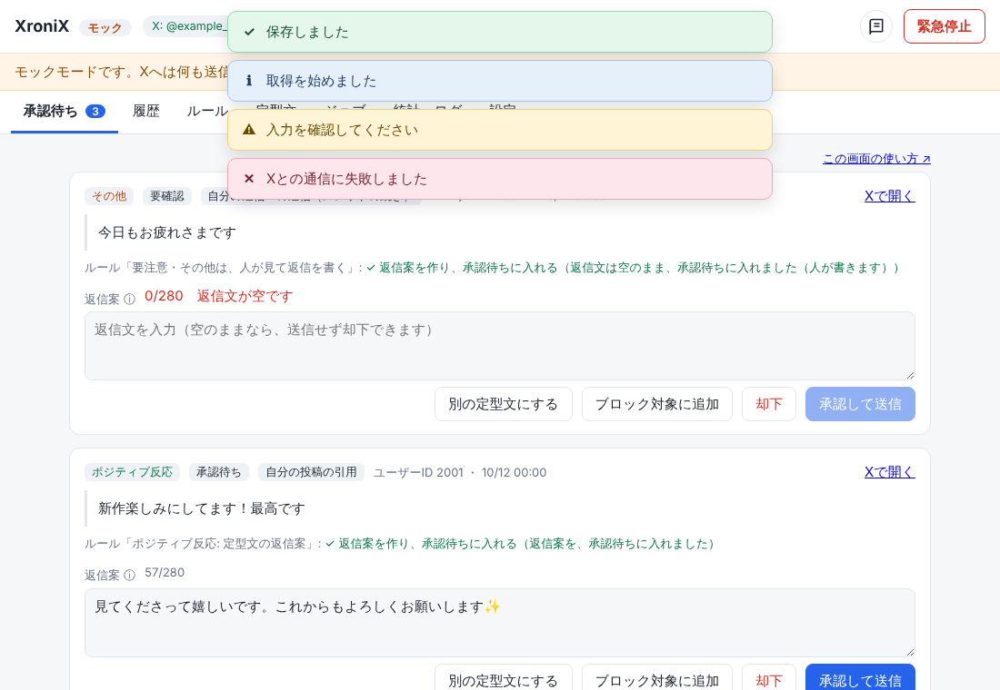
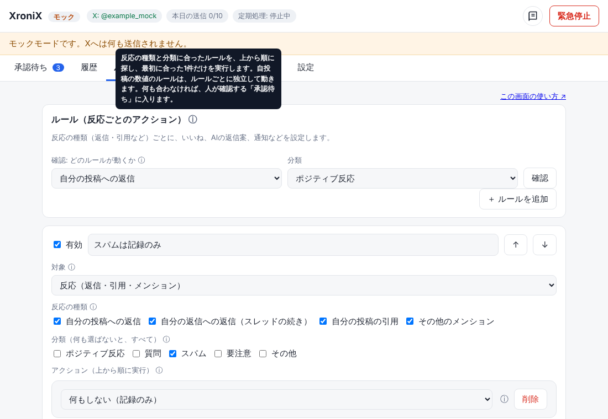
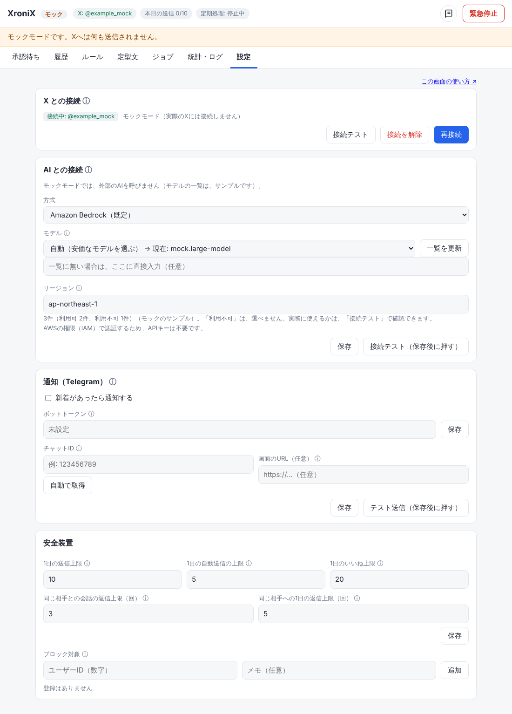
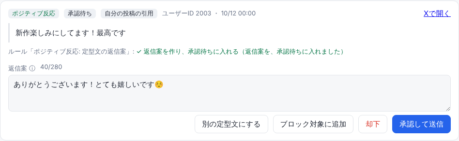
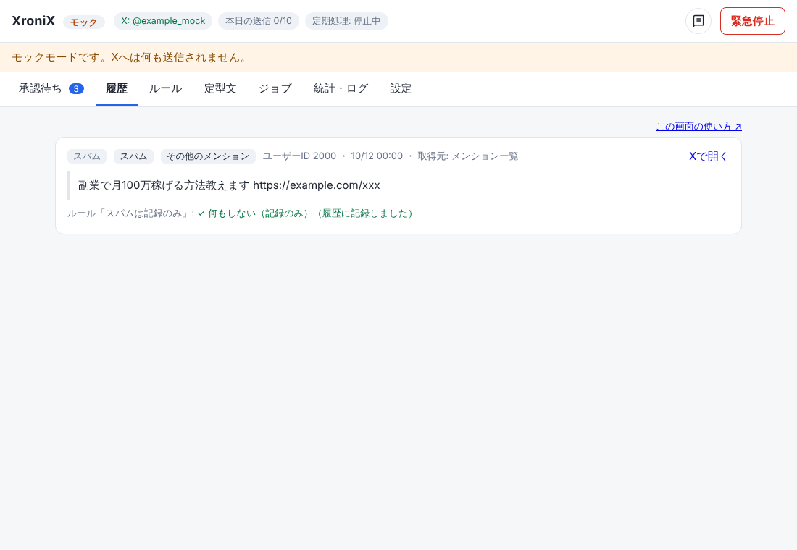
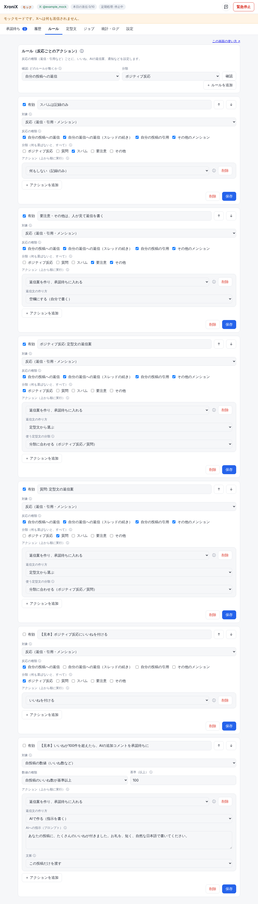
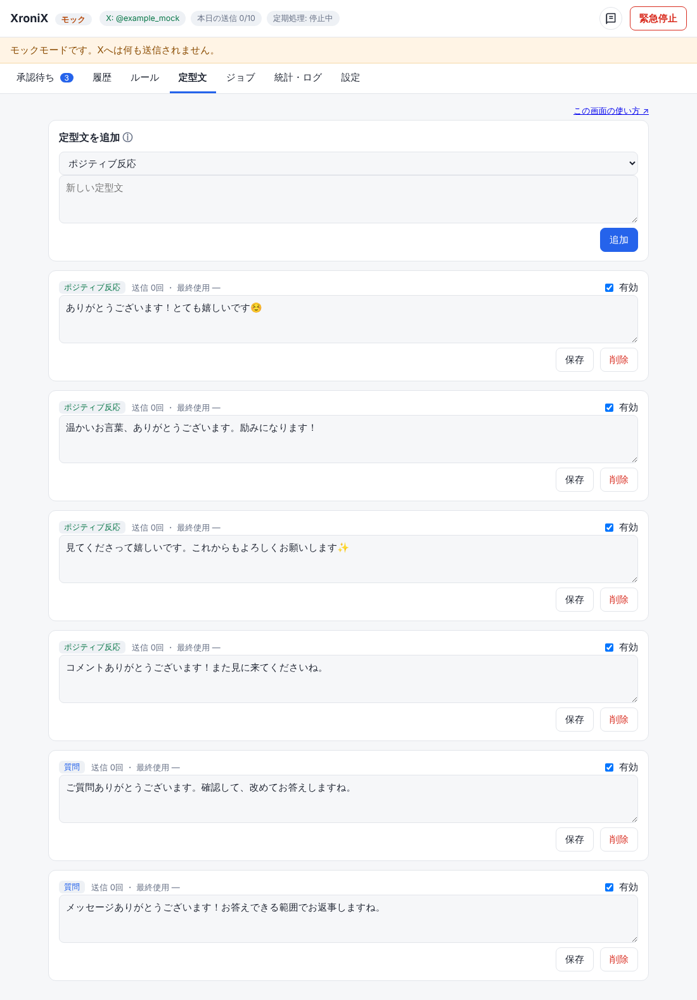
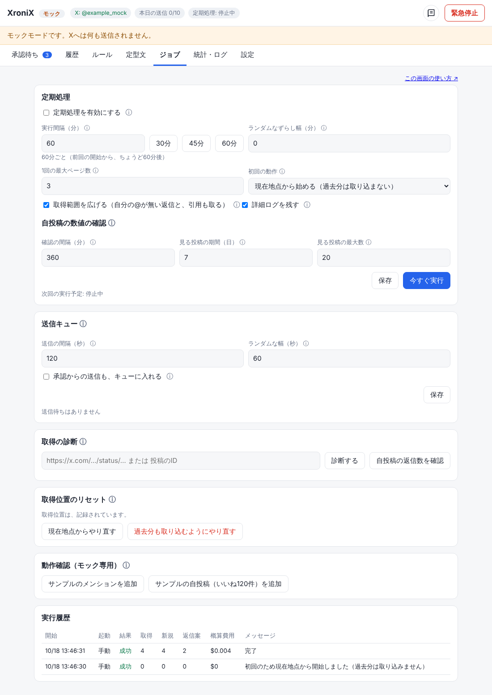
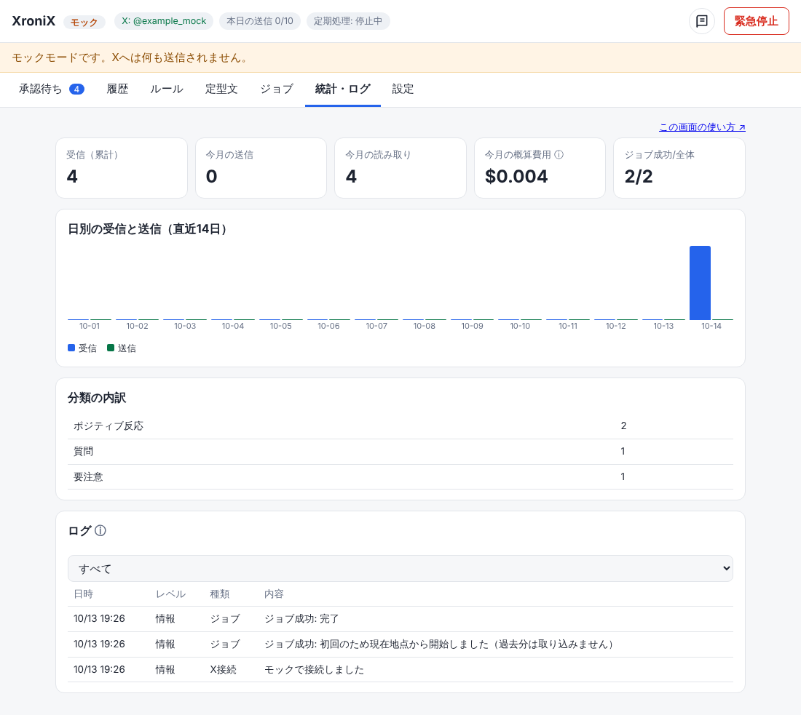

XroniX 使い方ガイド
初めて使う人向けの説明です。このページは別タブで開いています。XroniXの画面と見比べながら読んでください。
はじめに
XroniXは、Xのアカウント @example_account に付いた返信やメンションを、見逃さずに、無理のない手間で返すための個人用アプリです。基本は半自動です。新着を集め、種類を分け、返信案を作り、人が確認してから送ります。
| できること | 説明 |
|---|---|
| 新着の取得 | 決まった間隔で、返信・引用・メンションを集めます。自分の@が無い返信や引用も、「取得範囲を広げる」で拾えます。 |
| 返信案の作成 | 定型文、またはAI（Amazon Bedrock）が案を作ります。 |
| 人の承認 | 案を直して送る、または却下します。 |
| 自動処理 | いいねや通知など、決めた範囲だけを自動で行います。 |
| 安全装置 | 1日の上限、ブロック、緊急停止があります。 |
画面の見かた

| 番号 | 場所 | 説明 |
|---|---|---|
| 1 | 本のアイコン | このマニュアルを、別タブで開きます。 |
| 2 | 緊急停止 | 取得と送信をすべて止めます。もう一度押すと解除します。 |
| 3 | タブ | 画面を切り替えます。数字は承認待ちの件数です。 |
| 4 | カード | 1件の反応です。種類、本文、ルールの実行結果が出ます。 |
| 5 | 返信案 | 文字数と、送れない理由が出ます。ここで直せます。 |
上部のチップ（小さな丸い表示）には、Xの接続状態、本日の送信数、定期処理の次回時刻が出ます。各画面の右上にある「この画面の使い方 ↗」から、この文書の該当する場所を開けます。
通知（トースト）の色
操作の結果は、画面の上部に短く表示されます。クリックすると閉じます。

| 色 | 意味 | 表示時間 |
|---|---|---|
| 薄緑 | 成功 | 約3秒 |
| 薄青 | お知らせ | 約3秒 |
| 薄黄 | 警告。入力や状態を確認してください | 約5.5秒 |
| 薄ピンク | エラー。通信や外部サービスの失敗です | 約7秒 |
ⓘにマウスを載せると、その項目の説明が出ます。長い説明は画面に置かず、ⓘに集めています。

ログインとログアウト
XroniXは、メールアドレスとパスワードでログインします。メールアドレスがログインIDです。
| 場面 | 操作 |
|---|---|
| 初めてのログイン | 管理者のメールアドレスに、「XroniX の初回ログイン」のメールが届きます。メールの仮パスワードでログインすると、新しいパスワードの設定に進みます（12文字以上、英大文字・英小文字・数字を含む）。仮パスワードは7日で無効になります。 |
| ふだんのログイン | メールアドレスとパスワードを入力します。ログイン状態は、このブラウザに30日まで保たれます。 |
| パスワードを忘れた | ログイン画面の「パスワードを忘れた場合」を押し、メールアドレスを入力します。メールに確認コード（6桁）が届くので、コードと新しいパスワードを入力します。 |
| ログアウト | 画面右上の「ログアウト」を押します。共用のパソコンでは、必ずログアウトしてください。 |
最初の設定
次の順に進めると、迷いません。小さく試すため、最初は送信の上限を小さくします。

| 手順 | やること | 確認方法 |
|---|---|---|
| A | 設定でClient ID・コールバックURL・Client Secretを保存し、「Xと接続」を押す。 | 上部のチップに「X: @アカウント名」が出る。 |
| B | AIの種類（既定はBedrock）を選び、モデルを一覧から選ぶ。「接続テスト」を押す。 | 成功のトーストが出る。 |
| C | Telegramのボットのトークンを保存し、ボットに話しかけてから「チャットIDを検出」を押す。 | 「テスト通知」が届く。 |
| D | 1日の送信上限、自動送信の上限、いいねの上限を決める。 | チップの「本日の送信 0/上限」。 |
| E | ジョブで間隔を決め、有効にする。 | チップに次回時刻が出る。 |
毎日の使い方
- 通知（Telegram）か、承認待ちタブの数字で、新着を知る。
- 承認待ちを開き、1件ずつ本文と返信案を読む。
- 必要なら返信案を直し、「承認して送信」を押す。送らないなら「却下」を押す。
- 迷惑な相手は「ブロック対象に追加」を押す。
- ときどき、統計・ログで、取得数と費用を確認する。
承認待ち
人が確認する返信案の一覧です。上から新しい順に並びます。

| ボタン | 動作 |
|---|---|
| 承認して送信 | 返信案をXに投稿します。リンクがある、文字数が多い、上限に達した場合は押せません。 |
| 別の定型文にする | 定型文から別の案に替えます。 |
| ブロック対象に追加 | その相手への返信を止めます。 |
| 却下 | 送らずに終わります。履歴に残ります。 |
返信案の状態
履歴
処理済みの反応（送信済み、却下、記録のみ、など）を確認できます。ルールがどう動いたかも出ます。

ルール
反応の種類ごとに、何をするかを決める画面です。たとえば「ポジティブ反応にはいいねを付ける」「いいねが100件を超えたらAIの追加コメント案を作る」などを設定できます。

ルールの探し方
| 項目 | 説明 |
|---|---|
| 対象 | 「反応」（返信・引用・メンション）か、「自投稿の数値」（いいね数など）。 |
| 反応の種類 | 自分の投稿への返信、自分の返信への返信（スレッドの続き）、自分の投稿の引用、その他のメンション。 |
| 分類 | ポジティブ反応、質問、スパム、要注意、その他。選ばなければ、すべてが対象です。 |
| アクション | 上から順に実行されます。複数を並べられます。 |
アクションの種類
| アクション | 内容 | 承認 |
|---|---|---|
| 何もしない（記録のみ） | 履歴に記録します。 | 不要 |
| 通知する | Telegramに、件数だけを送ります。 | 不要 |
| いいねを付ける | Xの権限 like.write が必要です。 | 不要 |
| 返信案を作り、承認待ちに入れる | 定型文、AI、空欄から選べます。 | あなたが承認 |
| 返信を自動で送る | 定型文かAIで作り、そのまま送ります。1日の自動送信の上限があります。 | 不要（慎重に） |
| ブロック対象に追加 | 相手を、以後の返信対象から外します。 | 不要 |
AIで作る場合
- プロンプト（AIへの指示）を書きます。
- 文脈は「この投稿だけ」か「スレッド全体（1〜10件）」から選びます。
- リンク、@、#を含む出力や、長すぎる出力は、自動で破棄されます。
設定例
| やりたいこと | 設定 |
|---|---|
| ポジティブ反応には、まず定型文で返す | 分類「ポジティブ反応」、アクション「返信案を作る（定型文）」 |
| ポジティブ反応にいいねだけ付ける | 分類「ポジティブ反応」、アクション「いいねを付ける」 |
| スパムは放置する | 分類「スパム」、アクション「何もしない」 |
| 人気の投稿にお礼を出す | 対象「自投稿の数値」、いいね数が基準以上、アクション「AIで返信案」 |
定型文
返信案の元になる文章です。分類ごとに登録でき、繰り返しにならないよう順番に使われます。

- リンク（URL）は入れられません。
- 文字数は、日本語を2として数え、280までです。
ジョブ（定期処理）
新着を取りに行く間隔を決める画面です。

| 項目 | 説明 |
|---|---|
| 実行間隔 | 1〜999分。前回の開始から、この分数後に動きます。 |
| ランダムなずらし幅 | 1〜99分。前後にずらし、秒もランダムにします（毎回00秒にはなりません）。 |
| 初回の動作 | 既定は「現在地点から始める」。過去分は取り込みません。 |
| 今すぐ実行 | 待たずに1回動かします。 |
| 取得範囲を広げる | 既定はオンです。メンション一覧に出ない返信（自分の@が無いもの）を検索で補い、引用が増えた投稿だけ引用を取りに行きます。ルールで「自分の投稿への返信」「自分の返信への返信」「自分の投稿の引用」を使うときに必要です。自分の投稿の返信数が増えたときは、その会話を検索して、自分宛ての返信を補います（自投稿の確認の間隔ごと。間隔を短くすると早く拾えますが、自分の投稿の読み取り費用が増えます）。他人の投稿の読み取りになり、約$0.005／件かかります。検索の対象は直近7日です。 |
| 送信キュー | 自動送信（と、設定すれば承認からの送信）は、すぐには送らず、キューに入れて、間隔をあけて1件ずつ送ります。短時間に続けて送ると、スパムとみなされたり、表示が制限されたりする恐れがあるためです。「送信の間隔（秒）」に、「ランダムな幅（秒）」を前後に加えた間隔で送ります（既定は120秒 ± 60秒）。待っている返信は、「外す」で、承認待ちに戻せます。送る時に、上限（1日の送信、会話）に当たると、送らずに承認待ちへ戻します。緊急停止中は、キューも止まります。 |
| 取得の診断 | 取りこぼしの調査用です。投稿のURL（またはID）を入れて「診断する」を押すと、その投稿をXから読み、種類・返信先・本文の自分の@・取り込み状況・取得位置との関係から、「なぜ取り込まれないか」を表示します（約$0.005〜0.01）。取り込まれていない投稿は、Xの検索に出るかも調べます（「検索の確認」の表。数セント）。検索にも出ない場合は、Xが一覧と検索から外している可能性があります。「この投稿を取り込む」で、手動で取り込めます（ルールも動きます）。「自投稿の返信数を確認」は、自分の投稿ごとに、Xが数える返信数・引用数と、取り込み済みの件数を並べます（約$0.001／投稿）。 |
| 取得位置のリセット | 通常は不要です。「どこまで読んだか」を消し、次の実行を初回として扱います。「現在地点からやり直す」は過去分を取り込みません。「過去分も取り込むようにやり直す」は、過去のメンションも取り込みます（件数に応じて費用が増え、自動送信のルールが有効だとまとめて送られる恐れがあります）。履歴・統計・取り込み済みの反応は消えません。 |
| 自投稿の数値の確認 | いいね数などを、決めた間隔で確認します。同じ投稿とルールの組は、1回だけ動きます。 |
統計・ログ
日別の取得数、分類別の件数、概算費用、ログを確認できます。費用は目安です。
ログの「詳細」には、ジョブの各段階（何件取れたか、取得位置、取り込んだ／スキップした理由、使ったルール）が出ます。返信が取り込まれないときは、レベルを「詳細も含めてすべて」にして、該当する実行のログを上から読んでください。投稿の本文は記録されません。詳細ログは、ジョブ画面の「詳細ログを残す」でオフにできます（既定はオン、7日で削除）。

設定
X、AI、Telegram、安全装置の設定です。図6を参照してください。
| 項目 | 説明 |
|---|---|
| X | Client ID、コールバックURL、Client Secret。保存後に「Xと接続」を押します。いいねの権限が必要なときは、接続し直します。 |
| AI | Bedrock（既定）、OpenAI互換、または使わない。使えるモデルの一覧から選び、接続テストで確認します。 |
| Telegram | ボットのトークンと、チャットID。通知には件数だけが入ります。 |
| 承認ボタン | Telegramの設定の「承認ボタンを有効にする」を押すと、承認待ちが、相手の投稿と返信案の全文つきで、「承認して送信」「却下」のボタンと一緒に、Telegramに届きます。押した結果は、そのメッセージに表示されます。ボタンを押せるのは、許可したユーザーIDだけです（個人のチャットなら、チャットIDと同じ）。承認は、画面の承認と同じ検査を通ります。返信案の書き換えは、画面で行います。本文がTelegramのサーバーを通ります。必要なもの: ボットトークン、チャットID、画面のURL（https://…）。有効にすると、チャットの自動検出は使えなくなります。 |
| 安全 | 1日の送信上限（既定10）、自動送信の上限（既定5）、いいねの上限（既定20）。 |
安全装置
| 仕組み | 内容 |
|---|---|
| 1日の送信上限 | 超えると、送信を拒否します。 |
| 自動送信の上限 | 超えた分は、承認待ちに回ります。 |
| いいねの上限 | 超えるといいねを止めます。失敗は数えません。 |
| 会話の上限 | 同じ相手との、同じ会話での返信（既定3回）と、同じ相手への1日の返信（既定5回）の上限です。超えると、ルールによる返信案づくりと自動送信を止めます（人が承認する送信は止めません）。相手が返信を繰り返す場合や、相手も自動返信の場合に、会話が終わらなくなることを防ぎます。反応は履歴に残り、理由が出ます。 |
| ブロック対象 | 返信しない相手です。 |
| リンク禁止 | 返信文にURLがあると、送れません（費用が約13倍になるため）。 |
| 緊急停止 | 画面右上のボタン1つで、取得と送信を止めます。 |
| 再送しない | 投稿作成は、失敗しても自動で再送しません。 |
困ったとき
| 症状 | 確認すること |
|---|---|
| 返信が取り込まれない | 統計・ログで、レベルを「詳細も含めてすべて」にします。「メンション一覧: ○件を取得」「返信の検索: ○件を取得」が0件なら、Xが返していません。件数があるのに取り込まれないなら、「スキップ」の理由を見ます。警告に「HTTP 403」などが出ている場合は、その理由（Xの説明）が書かれています。 |
| ログインできない | メールアドレスとパスワードを確認します。「パスワードを忘れた場合」で再設定できます。失敗が続くと、Cognitoが一時的に止めます。しばらく待ってからやり直してください。 |
| 新着が来ない | Xが接続されているか。定期処理が有効か。緊急停止が入っていないか。初回は、過去分を取り込みません。 |
| 「Xの認可が切れています」と出る | 設定で「Xと接続」を押し直します。 |
| 承認して送信が押せない | 返信文が空、280字超、リンクあり、1日の上限、または緊急停止です。 |
| AIの接続テストが失敗する | そのモデルが、使える一覧に入っているか。AWSでモデルの利用が許可されているかを確認します。 |
| Telegramに届かない | ボットに先に話しかけたか。チャットIDを検出し直します。 |
| 「結果不明」が出た | Xの画面で、投稿されているかを確認してから、手動で解決します。 |
| 画面が古い | ブラウザを再読み込みします。 |
用語集
| 用語 | 意味 |
|---|---|
| メンション | @example_account を含む投稿です。 |
| 引用 | 自分の投稿を引用した投稿です。 |
| スレッド | 返信が連なった一連の会話です。 |
| 分類 | ポジティブ反応、質問、スパム、要注意、その他。本文から自動で付くラベルで、相手がフォロワーかどうかは見ていません。 |
| ポジティブ反応 | 好意的・応援・お礼などの文面の反応です（例: 応援、癒し、尊い、可愛い、😍）。フォロワーかどうかとは無関係です。 |
| ルール | 反応の種類と分類に応じた、処理の決まりです。 |
| アクション | ルールが行う1つ1つの処理です。 |
| プロンプト | AIへの指示文です。 |
| Bedrock | AWSのAIサービスです。 |
| ジョブ | 決まった間隔で動く定期処理です。 |
| モックモード | Xへ何も送らない、試用モードです。 |
費用の目安
XのAPIは使った分だけ課金されます。下の単価は、設計時に公式の文書で確認した値です。変わる場合があるため、Xの開発者コンソールで月の上限額を設定してください。
| 操作 | 単価 |
|---|---|
| 自分の投稿・メンションの読み取り | $0.001／件 |
| 他人の投稿の読み取り | $0.005／件 |
| 投稿作成（返信など） | $0.015／回（返信の区分は実測で確認中） |
| リンク付き投稿 | $0.20／回（本アプリは禁止） |
AIの費用は、モデルにより異なります。統計・ログの概算費用で、傾向を確認できます。